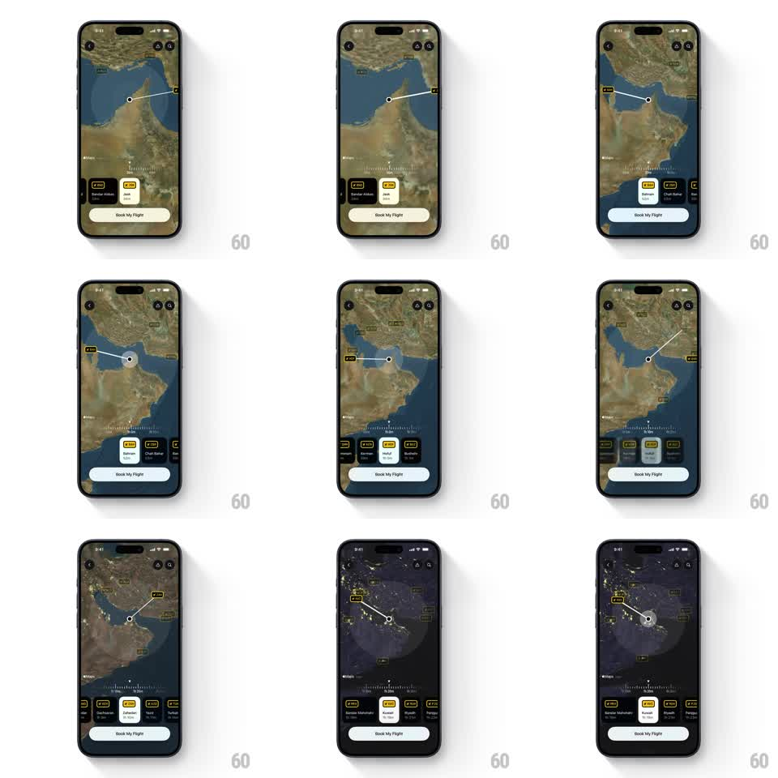

Media
Frame-by-frame

Rebuild this interaction 1:1: FocusFlight's duration-driven flight map - scrubbing a flight-duration slider zooms a satellite map outward, sweeps a route arc to reachable destinations, updates price/destination cards, and shifts the map from day to night as hours increase.

Rebuild this interaction 1:1: FocusFlight's duration-driven flight map - scrubbing a flight-duration slider zooms a satellite map outward, sweeps a route arc to reachable destinations, updates price/destination cards, and shifts the map from day to night as hours increase. ## Integration Integration: stack-agnostic spec - springs given as stiffness/damping, timed motions as duration + curve; map every value to your framework and animation library of choice. ## Scene Full-screen satellite map (coastal region) with a top icon bar. Bottom area: a horizontal row of duration chips (2 HR, 4 HR, 6 HR, ...) above a "Book My Flight" button, plus one or more destination cards showing price, city, and airport code. A white route line arcs from the origin marker to the current destination; a translucent range circle pulses around the origin. ## Motion spec Pattern: slider-scrubbed map zoom + day/night transition. - Scrub: as the duration value changes, the map zooms to fit the new range (400ms, ease-in-out per step) and the range circle rescales with it. - Route arc: the white line redraws to the new destination (dash draw 500ms, ease-out); the destination card cross-fades its price/city (200ms) and extra cards slide in horizontally when more destinations fit (250ms, 60ms stagger). - Chip row: the active chip highlights (filled pill) and the row scrolls to keep it visible (spring ~300/20). - Day/night: past a duration threshold the map cross-fades to a night style (dark oceans, city lights) over 600ms; shorter durations cross-fade back. ## Calibration - Map zoom follows the slider continuously while scrubbing - don't wait for release. - Only one route arc is alive at a time; the old arc fades as the new one draws. ## Reduced motion Zoom and arc changes snap with a 200ms fade; day/night switches without the cross-fade sweep. ## Don't miss - The slider is the hero control; the map, cards, and theme all react to it - nothing else animates independently. - Night mode is tied to duration, not the clock.